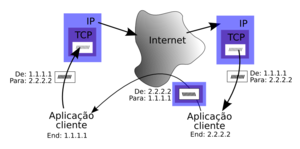

A história da internet começa no ambiente da Guerra Fria (1945-1991) onde as duas super potências envolvidas, Estados Unidos e União Soviética, estavam divididos nos blocos socialista e capitalista e disputavam poderes e hegemonias. Com o intuito de facilitar a troca de informações, porque temiam ataques dos soviéticos, o Departamento de Defesa dos Estados Unidos (ARPA - Advanced Research Projects Agency) criou um sistema de compartilhamento de informações entre pessoas distantes geograficamente, a fim de facilitar as estratégias de guerra. Nesse momento, surge o protótipo da primeira rede de internet, a Arpanet (Advanced Research Projects Agency Network).
Você já se perguntou como seu computador ou smartphone acessam as páginas da internet e, em diversos momentos, ainda comunicam dados entre si? Isso é possível, pois cada dispositivo possui um endereço único: o internet protocol, também conhecido como IP, ou o protocolo de internet. E, para que a comunicação seja feita, algumas regras são estabelecidas por esses protocolos de rede. O quanto você conhece sobre o assunto e o quanto está por dentro das particularidades do IP? Continue a leitura e saiba mais sobre esse protocolo de internet!.
1. IP 2. TCP/IP 3. HTTP/HTTPS 4. FTP 5. SFTP 6. SSH 7. SSL 8. ICMP
De uma forma simples, o TCP/IP é o principal protocolo de envio e recebimento de dados MS internet. TCP significa Transmission Control Protocol (Protocolo de Controle de Transmissão) e o IP, Internet Protocol (Protocolo de Internet). Para quem não sabe, protocolo é uma espécie de linguagem utilizada para que dois computadores consigam se comunicar. Por mais que duas máquinas estejam conectadas à mesma rede, se não “falarem” a mesma língua, não há como estabelecer uma comunicação. Então, o TCP/IP é uma espécie de idioma que permite às aplicações conversarem entre si.